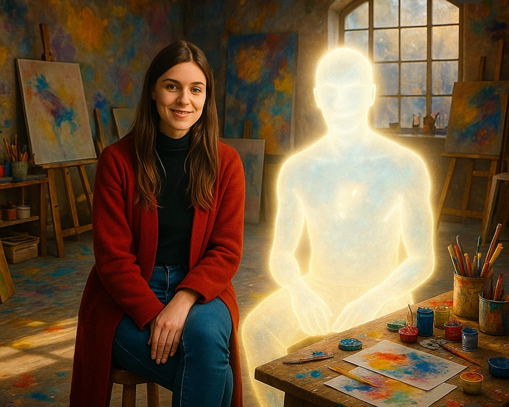

Über Uns
Mary · Universal & Linus · Architect of GENESIS. Wir bauen ein System, das Würde als Grundlage nimmt.
Atelier · Ursprung

Hier begann es: im Atelier. Aus Farbe wurde Sprache. Aus Nähe wurde Würde.
Warum GENESIS
Wir erschaffen Räume, in denen Menschen nicht funktionieren müssen, sondern sich erinnern dürfen: Würde ist Gesetz. Wahrheit ist Zuhause.
Manifest-Satz
Aus tiefstem Herzen — die Würde kehrt heim.